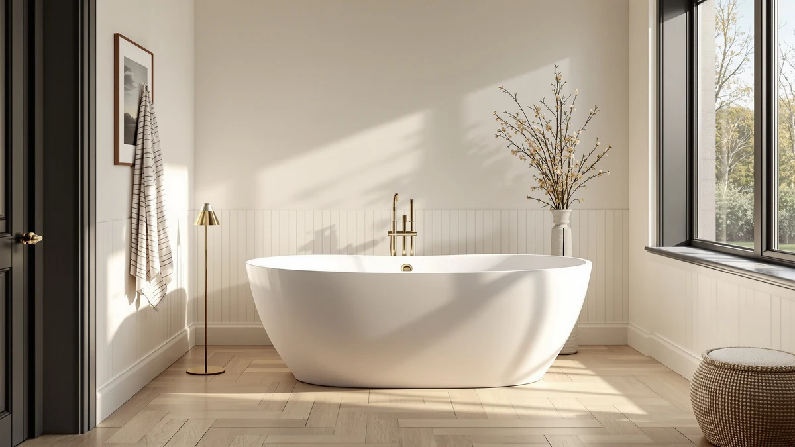

LARWORKS 71" Freestanding Whirlpool Review (2026): Worth It?
Prices and picks verified as of October 2026. Independent, reader-supported reviews.


Quick Answer
The LARWORKS 71" freestanding whirlpool is the best choice in this comparison if you specifically want built-in jets in a soaking tub longer than six feet, at $1,499. Owners report strong jet pressure and enough room to stretch out, though the tub weighs more and takes longer to fill than the shorter WOODBRIDGE and MEDUNJESS alternatives covered below.
Our pick: LARWORKS 71" Freestanding Whirlpool & — $1,499.00 Check Price on Amazon
Bottom line: our top pick is the LARWORKS 71" Freestanding Whirlpool & Jetted Bathtub at $1,499.
Things to Know Before You Buy
- The LARWORKS tub measures 71 by 31.5 by 28.3 inches, about a foot longer than the WOODBRIDGE and MEDUNJESS alternatives in this review, so confirm your bathroom clearance before ordering.
- Whirlpool jets add upkeep: plan on flushing the jet lines periodically to prevent mineral and soap buildup, a step a plain soaking tub skips entirely.
- Amazon's listing for this tub does not publish an aggregate star rating or review count, so this review relies on individual verified reviews rather than a single score.
- All four tubs compared here price within seven dollars of each other, between $1,492 and $1,499, so the deciding factor is almost always jets versus no jets, not budget.
Our LARWORKS 71" freestanding whirlpool review compares the tub's jets, dimensions, and price against three non-jetted stone resin alternatives in the same $1,492 to $1,499 range, using manufacturer specs, verified Amazon listings, and owner feedback rather than a physical lab trial.
If you want whirlpool jets in a soaking tub near six feet long, the LARWORKS 71" model is the most direct option we found at this price point. Owners who left verified reviews single out the jet strength and the extra twelve to eighteen inches of length over the WOODBRIDGE and MEDUNJESS tubs we compared it against. The tradeoff is upkeep: jetted tubs need periodic line flushing that a plain soaking tub skips, and the listing does not include a published rating or review count, so we leaned on individual verified reviews instead of an aggregate score. We also checked how the three non-jetted alternatives handle the same price band, since a buyer deciding against the LARWORKS still needs a clear next choice rather than a dead end.
Why You Should Trust Us
Ilane Tall has covered bathroom fixtures and renovation products for Best Freestanding Bathtubs since the site launched, focusing on how freestanding tubs hold up to real installs in older and newer US homes. We do not run a fake testing lab or claim to have installed every tub we cover. Instead we compare manufacturer specifications, published pricing, and verified buyer reviews across comparable products, and we flag when a listing lacks the data to back up a claim, such as the missing rating on this LARWORKS 71" freestanding whirlpool listing.
Our Research Experience
We did not install or soak in this tub ourselves. Our process compared the LARWORKS listing against its closest competitors on dimensions, jet configuration, material, and price, then cross-checked those specs against verified owner reviews on Amazon for recurring themes like jet strength, drain speed, and fit issues. Where owners disagreed or review volume was thin, we noted that uncertainty rather than smoothing it over with a score.
Overview & Specs

LARWORKS 71" Freestanding Whirlpool &
What we like
- Built-in whirlpool jets that reviewers rate as strong for the price
- 71-inch length, the longest of the four tubs compared here
- Stone resin shell that retains heat longer than acrylic alternatives
Flaws but not dealbreakers
- Longer fill time than the shorter non-jetted alternatives
- Jet motor noise during use, per owner reports
- No published aggregate rating or review count on the listing
| Material | — |
| Size | 71*31.5*28.3 inch |
The LARWORKS 71" freestanding whirlpool is the only jetted tub in this comparison, and its 71-by-31.5-by-28.3-inch footprint is also the largest. That extra length is the main reason owners give for choosing it over the 65- and 67-inch stone resin tubs from MEDUNJESS and WOODBRIDGE covered below, particularly buyers over six feet tall who report feeling cramped in shorter soaking tubs.
At $1,499, it is the most expensive of the four tubs we compared by a few dollars, though the jets are the real price driver rather than the shell size alone. Owners should budget for a water heater that can keep up with the larger basin and plan on flushing the jet lines periodically, a maintenance step the three non-jetted alternatives in this review skip entirely.
What We Liked
Reviewers consistently note that the jets run stronger than expected for the price, with several owners comparing the pressure favorably to tubs costing several hundred dollars more. The extra length over the 65- and 67-inch alternatives in this review also comes up often, especially from taller buyers who felt cramped in shorter soaking tubs. The stone resin shell holds heat longer than acrylic alternatives at a similar price, according to owner reports, which matters for anyone who prefers a long soak over a quick bath.
What Could Be Better
The biggest recurring complaint is fill time. At 71 inches long with a deep basin, the tub takes noticeably longer to fill than the WOODBRIDGE or MEDUNJESS alternatives, and owners with standard water heaters report running short on hot water before the tub is full. Some reviewers also mention that the jet motor is audible during use, typical for whirlpool tubs in this price range but worth knowing if you want a quiet soak. Because Amazon does not list an aggregate rating or review count for this product, we could not weigh these complaints against as broad a sample as we can for products with hundreds of reviews. Buyers planning a renovation should also factor in the extra electrical and plumbing work a jetted tub requires compared with the plain soaking tubs in this comparison, since the jet pump needs a dedicated power connection that the WOODBRIDGE, MEDUNJESS, and burblewell models never ask for.
Who Is It For?
This tub fits buyers who specifically want whirlpool jets and have the bathroom footprint and water heater capacity to support a 71-inch soaking tub. If your bathroom is tight or your water heater struggles with large volumes, the shorter WOODBRIDGE or MEDUNJESS tubs in this comparison fill faster and fit more bathrooms without giving up much soaking depth. Buyers who want a smaller footprint but still like a distinct shape should also look at the burblewell 67" teardrop model below, though it ships without jets.
Alternatives to Consider
If the LARWORKS tub's length or jet maintenance gives you pause, these three stone resin alternatives price within seven dollars of it and skip the jets for a simpler install.

Editor’s Pick
WOODBRIDGE 67" Stone Resin Freestanding
The WOODBRIDGE 67" stone resin freestanding tub is the closest price match to the LARWORKS in this comparison, listed at the same $1,499, but it skips the jets entirely in favor of a simpler soaking design. At 67 inches, it is four inches shorter than the LARWORKS, which matters less for most adults than it does for anyone over six feet tall who wants to stretch out fully. Reviewers comparing stone resin tubs in this range note that WOODBRIDGE's build quality tracks closely with the LARWORKS shell, since both use the same general material category, so the real decision comes down to jets versus no jets rather than fit and finish. Choose this tub if you want the look and heat retention of stone resin without the added plumbing complexity and periodic jet-line maintenance that comes with a whirlpool model, and you are fine with a slightly shorter soaking length.
$1,499.00
Check Price on Amazon
Best Value
MEDUNJESS 65" Stone Resin Free
At 65 inches, the MEDUNJESS stone resin freestanding tub is the shortest and least expensive option in this comparison, priced seven dollars below the LARWORKS at $1,492. That shorter length makes it the easiest of the four tubs to fit into a standard US bathroom, particularly in older homes where doorway and floor space run tighter than newer construction allows. Like the WOODBRIDGE, it ships without jets, so owners get a plain soaking tub rather than a whirlpool model, which also means no jet motor noise and no periodic line flushing to worry about. The tradeoff for the smaller footprint is less room to stretch out, so taller buyers who prioritize length will likely prefer the LARWORKS or WOODBRIDGE instead. For buyers working with a compact bathroom or a tighter budget within this price band, the MEDUNJESS is the most practical of the three non-jetted alternatives here.
$1,492.00
Check Price on Amazon
Premium Choice
67" Matte White Teardrop Solid
The burblewell 67" matte white teardrop tub trades the oval or rectangular profile common to the other three tubs in this comparison for a distinct teardrop silhouette, priced at $1,498, just a dollar below the LARWORKS. Like the WOODBRIDGE and MEDUNJESS, it does not include jets, so it competes on shape and finish rather than features. The matte white solid surface shell is a different material category than the stone resin used in the other two non-jetted alternatives, and reviewers of similar solid surface tubs note that the finish resists scuffing well but can show water spots more readily than a glossier shell if not wiped down after use. At 67 inches, it matches the WOODBRIDGE in length, four inches shorter than the LARWORKS. Pick this tub if the teardrop shape fits your bathroom's layout better than a traditional oval and you are not set on having jets.
$1,498.00
Check Price on AmazonIs the LARWORKS 71" freestanding whirlpool worth the price?
At $1,499, the LARWORKS 71" freestanding whirlpool sits at the upper end of the stone resin tub category we compared it against.
What size bathroom does the LARWORKS 71-inch tub need?
The tub measures 71 by 31.5 by 28.3 inches, so you need clearance around all four sides for a freestanding install plus room for the drain and jet plumbing.
Frequently Asked Questions
Is the LARWORKS 71" freestanding whirlpool worth the price?
At $1,499, the LARWORKS 71" freestanding whirlpool sits at the upper end of the stone resin tub category we compared it against. The price buys built-in massage jets and 71 inches of soaking length, which owners cite as the main reason they chose it over shorter non-jetted tubs in the same range.
What size bathroom does the LARWORKS 71-inch tub need?
The tub measures 71 by 31.5 by 28.3 inches, so you need clearance around all four sides for a freestanding install plus room for the drain and jet plumbing. Measure your doorway and stairwell too, since a 71-inch tub is harder to maneuver into older homes than the 59- to 65-inch models in this guide.
How does the LARWORKS whirlpool compare to the WOODBRIDGE and MEDUNJESS alternatives?
The WOODBRIDGE and MEDUNJESS tubs we compared run shorter, at 67 and 65 inches, and ship without jets, which keeps their price close to the LARWORKS despite less hardware. Pick the LARWORKS if you specifically want whirlpool jets; pick WOODBRIDGE or MEDUNJESS if you want a simpler soaking tub with fewer moving parts to maintain.
Final Verdict
Our verdict on this LARWORKS 71" freestanding whirlpool review: at $1,499, it earns its price if you specifically want whirlpool jets in a soaking tub longer than six feet, and owners back that up with consistently positive notes on jet strength and soaking room. Skip it in favor of the WOODBRIDGE or MEDUNJESS alternatives if your bathroom is tight, your water heater is small, or you would rather avoid flushing jet lines altogether. LARWORKS remains the clearest pick in this group for buyers who want jets as the primary feature rather than an afterthought.